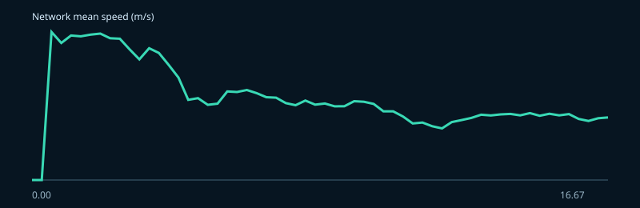
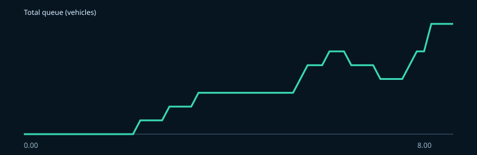

车路云协同实验报告
实验 rapid-medium-b0-s123-none-n0-d60-w10-a01 · 算法 fixed-time · 本页只展示本次实际运行输出。
| acceleration_variance | 1.9514648781481023 |
|---|---|
| algorithm_failure_count | 0 |
| algorithm_timeout_count | 0 |
| bicycle_completed_trips | 0 |
| bicycle_pedestrian_conflict_count | 0 |
| cloud_decision_latency_ms | 73.44219999994003 |
| co2_mg | 1790018.9419518108 |
| communication_drop_count | 0 |
| completed_trips | 0 |
| congested_intersection_count | 0.0 |
| congestion_propagation_time | not_triggered |
| cpu_percent_mean | 64.775 |
| data_write_latency_ms | not_applicable_no_persistence_sink |
| edge_decision_latency_ms | 0.7167787500156919 |
| emergency_braking_count | 0 |
| emergency_priority_detection_count | 0 |
| end_to_end_control_latency_ms | 74.15897874995572 |
| fallback_activation_time_s | not_applicable |
| fallback_duration_s | 0.0 |
| fuel_consumption_mg | 578966.9480523969 |
| gridlock_duration | 0.0 |
| max_congested_intersection_count | 0 |
| max_queue | 8 |
| mean_bicycle_queue_count | 0.0 |
| mean_bicycle_waiting_time_s | 0.0 |
| mean_pedestrian_waiting_time_s | 0.0 |
| mean_queue_meters | 11.264999999999999 |
| mean_queue_vehicles | 2.933333333333333 |
| mean_speed | 9.33008617141141 |
| mean_speed_m_s | 9.33008617141141 |
| mean_time_loss | 0.0 |
| mean_travel_time | not_available_no_completed_trip |
| mean_waiting_time | 2.5543168482554672 |
| memory_mb_peak | 75.37109375 |
| minimum_pet_s | not_observed |
| minimum_ttc_s | 1.814572205951859 |
| motor_bicycle_conflict_count | 0 |
| motor_motor_conflict_count | 1 |
| motor_pedestrian_conflict_count | 0 |
| mqtt_round_trip_latency_ms | 0.0 |
| network_recovery_time | not_triggered |
| nox_mg | 725.6146768598834 |
| pedestrian_completed_trips | 0 |
| pedestrian_crossing_count | 4 |
| performance_retention_under_delay | not_applicable_no_paired_baseline |
| performance_retention_under_packet_loss | not_applicable_no_paired_baseline |
| recovery_time_s | not_applicable |
| remote_edge_action_count | 0 |
| remote_edge_action_rejection_count | 0 |
| simulation_realtime_factor | 1.1374419830654818 |
| spillback_count | 0 |
| spillback_duration | 0.0 |
| spillback_sample_count | 0 |
| status | completed |
| stop_count | 8 |
| throughput | 0 |
| unsafe_command_rejection_count | 109 |


可追溯清单
{
"schema_version": "1.0",
"scenario_id": "xiongan_rongdong_20",
"scenario_hash": "9fdb293151c2c39a83b06dbeaa886c4ca1195d22ef95f06c36d05cb9472e503f",
"files": [
{
"path": "experiments/formal_2026/configs/profiles_no_disturbance.yaml",
"sha256": "fb6e79dd462b985cb6805b12dc6f8bd9dc18e69fe68385cc02e7a297a8a288f5",
"size_bytes": 1226
},
{
"path": "scenarios/configs/xiongan_rongdong_20.yaml",
"sha256": "cd513041aa42795a6eb8933fd0502e2ecf30491e3a921c2e11e71e4b97eef145",
"size_bytes": 3941
},
{
"path": "scenarios/generated/xiongan_rongdong_20/controlled_intersections.json",
"sha256": "ed7968e1df419235d8a9e31d5f1323c766613d01837caa5783ca27b737265672",
"size_bytes": 17642
},
{
"path": "scenarios/generated/xiongan_rongdong_20/functional_zones.add.xml",
"sha256": "4e263e003bff8cbc6cca09e8437cd107293c6a5eb0384a20f019100d354d4501",
"size_bytes": 158648
},
{
"path": "scenarios/generated/xiongan_rongdong_20/multimodal.rou.xml",
"sha256": "41d720ffcf327b6f6d17989d23cd263b43d765bdbe7c7f38e3bd3a5f9085a1da",
"size_bytes": 297235
},
{
"path": "scenarios/generated/xiongan_rongdong_20/rongdong.multimodal.net.xml",
"sha256": "ddbdb55d0efbe494bf7e1f41ff0510de935f5bf3e68479b4a68da29d0150c2e8",
"size_bytes": 16032174
},
{
"path": "scenarios/generated/xiongan_rongdong_20/routes.S03.rou.xml",
"sha256": "215db54cda1275a37e715bc322b0dcacb1730221c16612513c6829f93158ecb5",
"size_bytes": 751441
},
{
"path": "scenarios/generated/xiongan_rongdong_20/vtypes.add.xml",
"sha256": "6c0e82b5968e907585873534a26667f5ecd49ac862870a9d253b8f043f0ce217",
"size_bytes": 4791
},
{
"path": "scenarios/generated/xiongan_rongdong_20/xiongan_rongdong_20.S03.sumocfg",
"sha256": "45899040c7f987a46afa6b6109e6bbf0fc47438c61351cd2144602e280f15e51",
"size_bytes": 1077
}
],
"provenance": {
"algorithm": "fixed-time",
"algorithm_version": "1.0.0",
"scenario_profile": "S03",
"seed": 123,
"duration_s": 60.0,
"isolate_algorithms": false,
"publish_feedback_to_bus": false,
"publish_runtime_telemetry_to_bus": false,
"include_communication_events": false,
"surrogate_safety_interval_s": 5.0,
"python": "3.12.13",
"sumo_home": "D:\\程序项目\\面向雄安新区的城市大脑\\exports\\xiongan_3d_portable_v4\\xiongan_3d_portable_v4\\runtime\\sumo"
},
"git_revision": "5e6e30750b499fb33837bff9f4cb18fa6e8a5e0d"
}